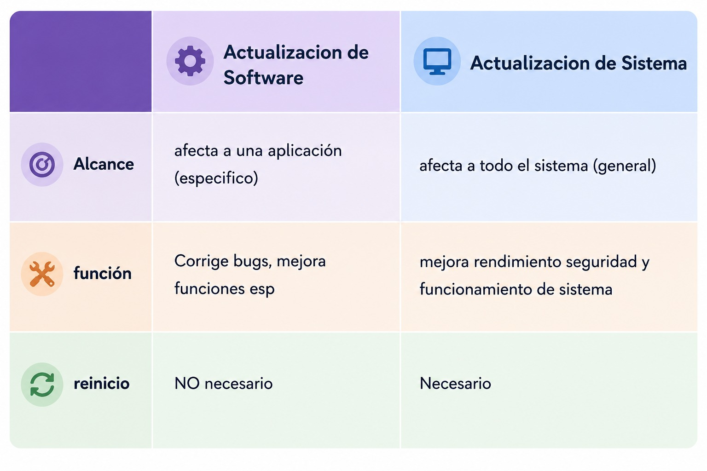

06/03 - ACTIVIDAD DE DIAGNOSTICO
1- ¿En cuantas partes se divide la placa madre?
Se divide entre:
Ⅰ CONECTORES
- De energía (ATX / ATX_V12)
- De almacenamiento (SATA 2/3, M.2)
- De ventilación (CPU_FAN, SYS_FAN)
- Frontales y externos (HDMI, F_USB, F_AUDIO, )
Ⅱ RANURAS
- SOCKET
- RANURA DIMM
- DE EXPANSION (video,audio,red)
Ⅲ CHIPS
- CHIPSET (nothbridge, southbridge)
- PROCESADOR
- MICROCONTROLADOR
Ⅳ ARRANQUE
- M_BIOS / B_BIOS
- PILA CR2032
Ⅴ VRM
- MOSFET
- CONDENSADOR
- INDUCTOR
2- ¿Porque el windows se instala por defecto en la particion C?
Porque anteriormente se utilizaban los disquetes quienes utilizaban las unidades A y B, y a los mas nuevos de almacenamiento (disco duros / SSD) se los guardo por defecto en el C.
3- ¿Cual es la diferencia entre actualización de software y sistema operativo?

4- ¿Como se accede a la Bios para cambiar el orden de arranque?
1. Reiniciar el equipo
- En Windows , seleccionar la opción Reiniciar desde el menú de inicio.
2. Ingresar a la BIOS
- Durante el reinicio, presionar repetidamente una de las siguientes teclas (según el fabricante de la placa base):
- SUPR (Delete)
- ESC
- F10
- Continuar presionando hasta que aparezca la pantalla de configuración de la BIOS o UEFI .
3. Acceder al menú de arranque
- Una vez dentro de la BIOS, utilizar las flechas del teclado para desplazarse hasta la pestaña BOOT (Arranque).
4. Cambiar el orden de arranque
- Buscar la opción Boot Priority o Boot Order .
- Utilizar las teclas + y - (o las indicadas por la BIOS) para colocar el pendrive como primer dispositivo de arranque .
5. Guardar la configuración
- Guardar los cambios realizados (generalmente con la tecla F10 ), confirmar la acción y salir de la BIOS.
- El equipo se reiniciará utilizando la nueva configuración de arranque.
5- Como crear un pendrive Booteable
Para crear un pendrive Booteable necesitamos:
- Un pendrive con 16 / 8 GB sin contenido (ya que el programa que creara el pendrive booteable borrara todo)
- Archivo ISO del S.O (Windows/Linux) conseguido desde la pagina oficial del Sistema Operativo para descargarlo.
- uso de Rufus o Yumi para grabar para que el programa capten el archivo Iso que descargamos al pendrive para que pueda arrancar desde ahi.